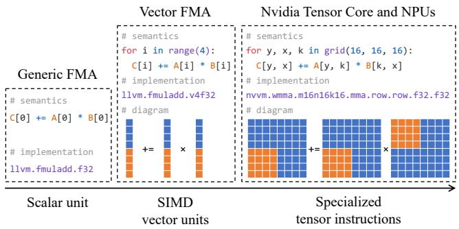
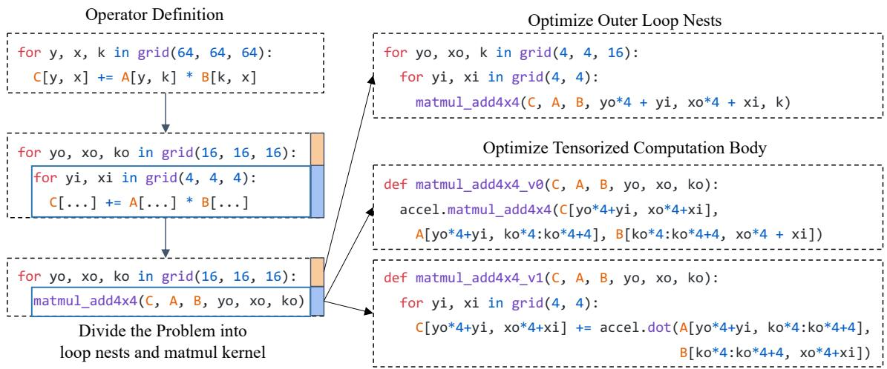
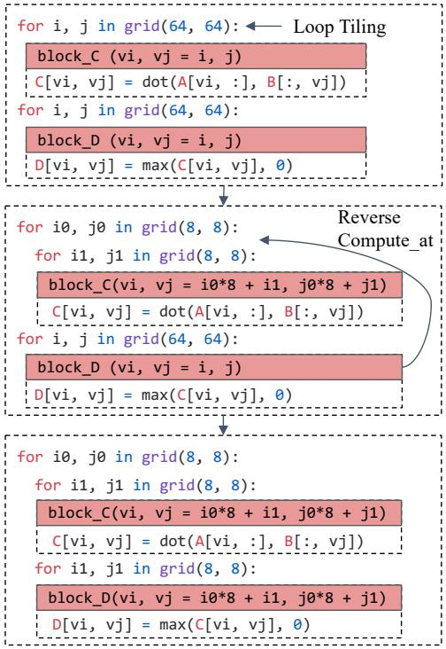
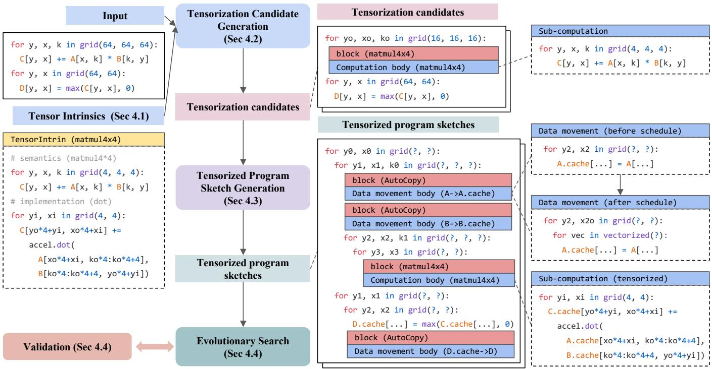
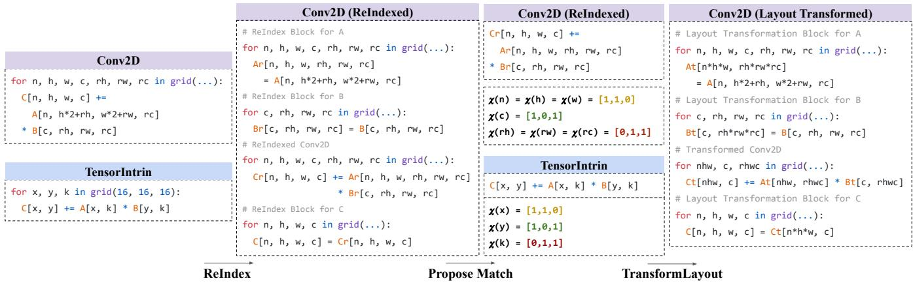
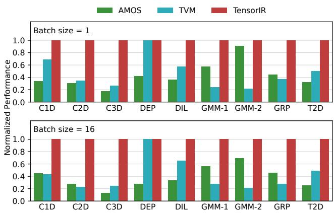
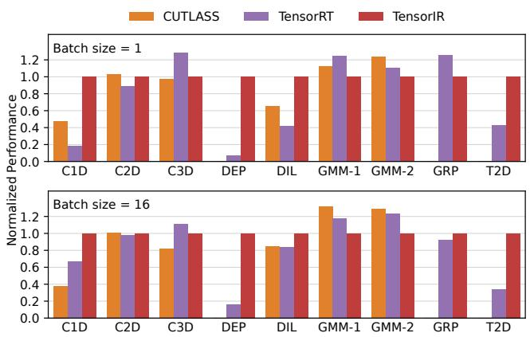
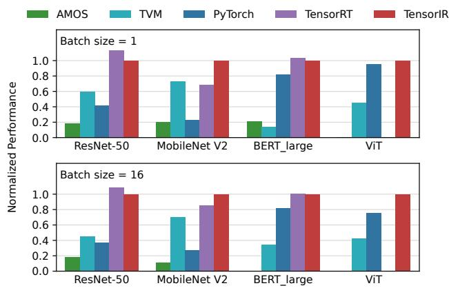
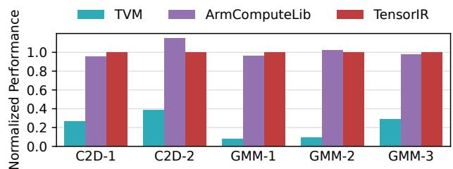
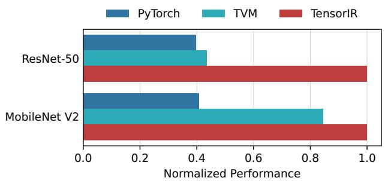

TensorIR: An Abstraction for Automatic Tensorized Program Optimization
ASPLOS 2023
compiler
tensor
optimization
gpu
codegen
A compiler abstraction that isolates tensorized computations into blocks, enabling automatic scheduling and optimization for specialized hardware intrinsics.
Background & Motivation
The Rise of Hardware Specialization

- Deep learning deployment spans from servers to embedded devices.
- Modern accelerators (TPUs, NPUs, GPUs) increasingly rely on specialized high-dimensional tensor computation instructions.
- These instructions (e.g., Tensor Cores) replace traditional scalar/vector units to meet heavy throughput requirements.
The Engineering Bottleneck

- Currently, domain experts manually optimize tensorized programs using a divide-and-conquer approach.
- Experts craft highly optimized micro-kernels (e.g., Intel MKL-DNN, NVIDIA cuDNN) for specific hardware.
- This requires massive engineering effort and struggles to keep pace with rapidly evolving ML models and hardware.
Limitations of Existing ML Compilers

- Existing compilers (TVM, Halide, MLIR) typically use a bottom-up approach focused on scalar operations.
- They search over loop nest transformations but lack native abstractions for opaque tensorized computation primitives.
- Top-down polyhedral approaches also struggle to automatically map to arbitrary hardware tensor intrinsics.
The Tensorized Program Optimization Challenge
- Abstraction: Compilers need a way to pragmatically capture equivalent tensorized computations and multi-dimensional memory accesses.
- Search Space: The combination of loop tiling, threading, data layouts, and tensorized computations creates a massive optimization design space.
- Goal: Bring automatic program optimization to tensorized programs to unlock domain-specific hardware acceleration without manual micro-kernel writing.
Design
The TensorIR Abstraction
- TensorIR introduces a new construct called a
blockinto the loop nests. - A block divides and isolates a tensorized computation region from the outer loop nests.
- Tensor computation becomes a first-class citizen, enabling independent transformations on both outer and inner problems.
Block Signatures
- Unlike scalar computations, dependencies cannot be easily extracted from opaque tensor bodies.
- Block signatures explicitly store iterator domains, access regions, and read/write dependencies.
- This provides sufficient information to safely transform outer loops without inspecting the block’s inner body.
Reduction Blocks
- Reduction computations (e.g., matrix multiplication accumulation) require initialization and update steps.
- TensorIR introduces an optional initialization statement for blocks performing reductions.
- This allows the scheduler to jointly optimize tiling and compute locations for both steps.
Scheduling Transformations

- TensorIR provides primitives to transform programs into equivalent optimized schedules.
- Supports standard loop transformations: tiling, splitting, reordering, and compute location mutation.
- Dependencies are calculated purely by inspecting the block signature, preserving block isolation.
Blockization
- TensorIR introduces
blockizationto isolate a sub-region computation into a new sub-block. - Converts a scalar-based program into a tensorized computation candidate.
- Enables the compiler to dynamically create block hierarchies that match hardware tensor intrinsics.
Correctness Validation
- Loop Nest Validation: Ensures iterator bindings match domain constraints and producer-consumer relations are valid.
- Threading Validation: Checks thread bindings, cooperative memory accesses, and execution scopes (e.g., warp-level for Tensor Cores).
- Validation filters out invalid programs during automatic search, ensuring semantic equivalence.
Auto-Scheduling Architecture

- TensorIR includes a tensorization-aware automatic scheduler.
- Takes a workload description and hardware tensor intrinsic descriptions as inputs.
- Generates tensorization candidates, builds program sketches, and uses evolutionary search to find the optimal schedule.
Abstraction for Tensor Intrinsics
- Hardware instructions are described using a
TensorIntrinconstruct. - Contains two blocks: one for computation semantics and one for the low-level backend implementation.
- Specifies data types, memory layouts, storage scopes, and contiguity constraints.
Tensorization Candidate Generation

- Matches the program body to possible
TensorIntrindescriptions. - Uses a
ReIndextransformation to rewrite complex buffer access expressions (e.g., Conv2D) into intermediate iterators. - Calculates characteristic vectors to map workload iterators to intrinsic iterators.
Loop Reorganization
- Reorganizes the block instance space to match the sub-problem size of the tensor intrinsic.
- Performs necessary padding on computation blocks and input/output operands.
- Tiles and blockizes inner loops to isolate the corresponding tensor computations.
Data Movement as a First-Class Citizen
- Tensor intrinsics vastly improve compute throughput, making data movement the primary bottleneck.
- TensorIR inserts
AutoCopyblocks to decouple data movement from computation schedules. - Allows independent optimization of memory schedules (e.g., cooperative fetching, vectorization, stride padding).
Evolutionary Search
- Explores the massive search space of generated program sketches.
- Uses a boosting tree ensemble cost model based on features extracted from block signatures and bodies.
- Continuously validates mutated candidates to reject invalid programs caused by unmet hardware constraints.
Evaluation
Experimental Setup
- Implemented on top of the Apache TVM framework.
- GPU Platform: NVIDIA RTX 3080 (Tensor Cores) using float16.
- CPU Platform: AWS Graviton2 (ARM CPU) using 8-bit integer dot products (sdot).
- Baselines: TVM, AMOS, PyTorch, CUTLASS, TensorRT, ARMComputeLib.
Single Operator Performance (GPU)

- Evaluated on 1D/2D/3D Conv, Depthwise, Dilated, Group Conv, and GEMM.
- TensorIR outperforms existing ML compilers (TVM, AMOS) by up to 7.5x.
- Improvements stem from better abstraction and automatic scheduling of tensor compute intrinsics.
Comparison to Vendor Libraries (GPU)

- TensorIR outperforms CUTLASS and TensorRT on several operators (up to 13.9x faster).
- Achieves >75% throughput on heavily optimized operators like 3D Convolution and GEMM.
- Delivers competitive performance automatically, without requiring dedicated engineering teams.
End-to-End Model Performance (GPU)

- Evaluated on ResNet-50, MobileNet V2, BERT-large, and Vision Transformer (ViT).
- Outperforms PyTorch, TVM, and AMOS by 1.2x to 8.8x.
- Achieves 30% better performance on MobileNet V2 compared to TensorRT.
- Automatically supports emerging models (like ViT) that TensorRT did not yet support.
Tuning Efficiency
- TensorIR tunes end-to-end models up to 2x faster than TVM.
- Auto-tensorization generates faster programs, reducing hardware profiling time.
- The divide-and-conquer abstraction significantly reduces the search space size.
Single Operator Performance (ARM CPU)

- TensorIR achieves up to 12.5x speedup over TVM by leveraging native hardware acceleration.
- Reaches 85% to 105% of the throughput of the hand-optimized ARMComputeLib.
- Demonstrates TensorIR’s ability to easily generalize to different hardware platforms.
End-to-End Model Performance (ARM CPU)

- Outperforms PyTorch and TVM by 1.2x to 2.5x on end-to-end networks.
- Overcomes limitations in framework backends (e.g., PyTorch’s QNNPACK lacking sdot support).
- Reduces maintenance burdens by automating performance portability across diverse hardware.